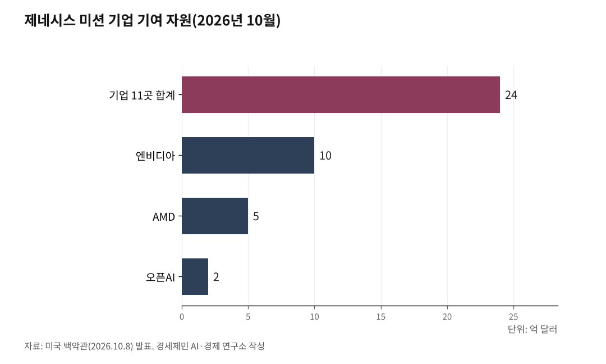
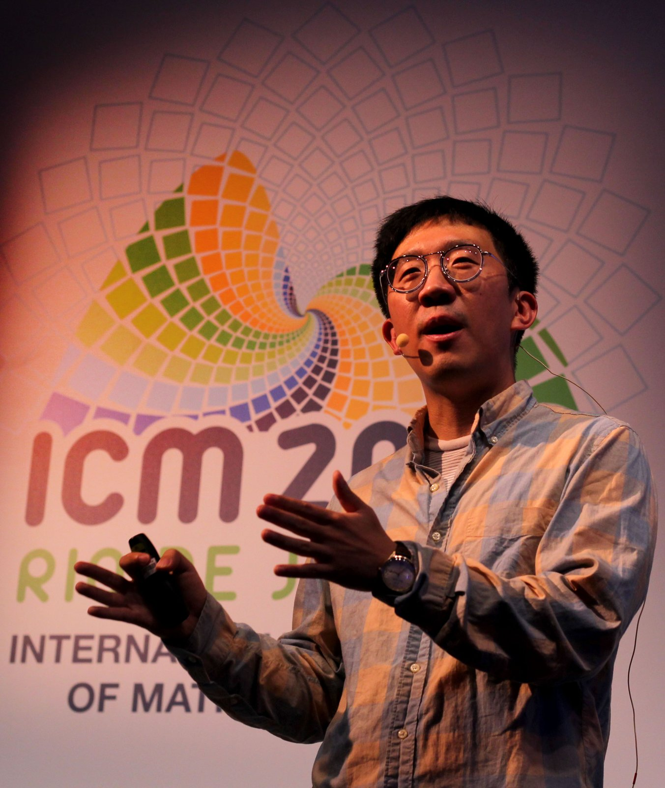
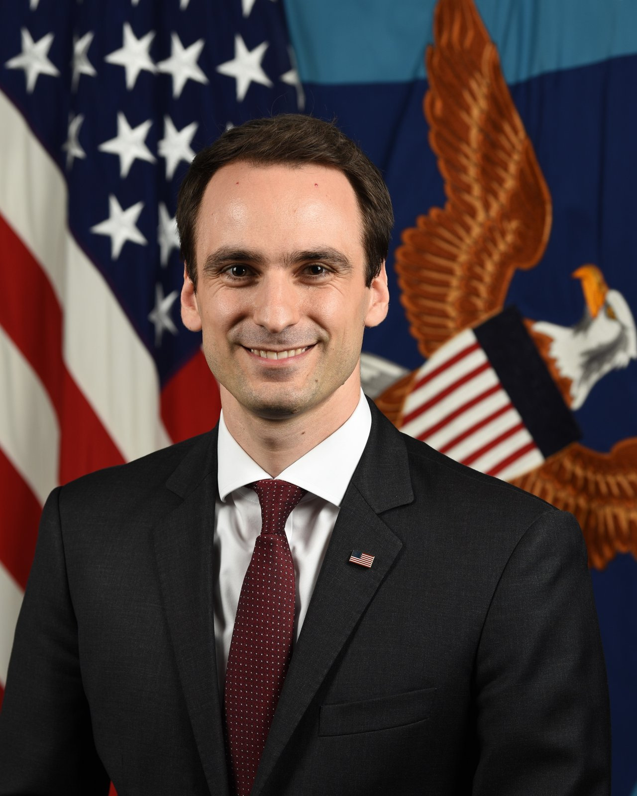

[AI동향] 오픈AI, AI가 쓴 수학 논문 722편 공개…하루 만에 3편 철회
필즈상 수상자 25명 "AI 기업과 수학계 목표 어긋나", 지지 연구자 8330명
백악관 'AI' 대신 '초지능' 공식 용어로, 과학 계획 60억 달러
AI경제저널=김갑봉 기자 | 오픈AI가 2026년 10월 6일 자사 내부 AI 모델이 쓴 수학 논문 722편을 공개했다. 수학자들이 풀지 못한 문제를 다룬 결과 묶음 372개를 담았다고 회사는 밝혔다.
이튿날 3편을 거둬들였다.
계산 부호 하나가 틀렸다. 컴퓨터 확인을 마친 결과는 열에 넷꼴이다.
국민에게는 AI가 낸 과학 결과를 누가 확인하고 책임지는지가 걸려 있다. 투자자에게는 미국 정부가 AI 과학 연구에 기업 연산 자원을 끌어모으는 흐름이 걸려 있다.
문제 4000개 던져 논문 722편
오픈AI는 아직 공개하지 않은 내부 모델에 수학 문제 약 4000개를 냈다. 결과 하나에 평균 챗GPT 프로 3시간 분량 계산이 들었다. 논문과 추론 요약은 공개 저장소 깃허브에 올렸다.
오픈AI는 9월 8일에도 내부 모델이 유체 움직임을 다루는 나비에-스토크스 방정식 난제를 풀었다고 발표했다. 미국 클레이수학연구소가 2000년 밀레니엄 문제 7개 가운데 하나로 고른 난제다.
이 방정식은 비행기 설계와 날씨 예보에 쓰인다. 매끄럽게 움직이던 유체가 유한한 시간 안에 끝없이 빨라질 수 있는지가 약 90년 묵은 물음이었다.
에이전트는 사람이 맡긴 일을 스스로 여러 단계로 처리하는 AI 프로그램이다. 첫 에이전트를 띄운 지 88시간 만에 답이 나왔다. 답을 낸 묶음에서는 에이전트 약 1만 개가 동시에 돌았다. 회사는 상금을 청구하지 않겠다고 밝혔다.

하루 만에 3편 철회, 컴퓨터 확인은 열에 넷
오픈AI는 10월 7일 논문 한 편에 계산 부호 오류가 있다고 밝혔다. 그 논문 결과를 딛고 선 2편까지 모두 3편을 거둬들였다. 다른 14편은 증명 보완과 명제 수정, 인용 정정으로 고쳤다. 회사는 오류를 찾으면 곧바로 고치고, 고칠 수 없으면 논문을 거두겠다고 밝혔다.
린은 수학 증명이 맞는지 컴퓨터가 따져 보는 프로그래밍 언어다. 철회 뒤 핵심 결과 719개 가운데 린으로 확인을 마친 것은 300개, 약 42%다.
알렉스 타운센드 미국 코넬대 수학과 부교수는 컴퓨터 확인을 마친 논문부터 발표했어야 했다고 지적했다. 오류가 더 나올 것으로 본다고도 말했다.
미국 고등연구소 수학·AI 자문그룹은 10월 6일 이번 공개가 사람이 결과를 이해하는 과정의 끝이 아니라 시작이라고 밝혔다.

필즈상 25명 경고, 지지 연구자 8330명
수학계 반발은 나비에-스토크스 발표 직후 나왔다. 9월 11일 필즈상 수상자 25명이 「수학에서 AI의 심각한 어긋남」 선언을 냈다. 2022년 수상자 허준이 교수와 2006년 수상자 테렌스 타오 교수도 이름을 올렸다.
선언은 AI 기업 목표와 수학계 목표가 크게 어긋난다고 적었다. 결과를 서둘러 발표해 앞선 연구를 인용할 시간조차 두지 않는다고 비판했다. 참이냐 거짓이냐만 가린 명제를 점점 빠르게 쏟아내면 새 생각이 자랄 땅을 망칠 수 있다고도 경고했다. 10월 14일 현재 선언을 지지한 연구자는 8330명이다.
이 자문그룹은 앞서 9월 29일 수학계에서 받은 답 600여 건을 바탕으로 권고문을 냈다. 사람이 이해하지 못한 결과를 내놓았다면 이해가 뒤따르도록 기업이 돈을 대고 책임지라는 내용이다.
오픈AI는 이 권고를 참고했다며 시도한 문제 수와 계산량을 공개했다.

백악관 '초지능' 명령과 과학 60억 달러
트럼프 대통령은 9월 29일 행정명령 제14434호에 서명했다. 연방 행정부 공식 문서에서 '인공지능' 대신 '초지능'이라는 말을 쓰라는 명령이다.
대통령 과학기술보좌관은 60일 안에 초지능 연방 정의를 담은 입법안을 대통령에게 내야 한다. 시한은 11월 28일이다.
백악관은 10월 8일 60억 달러가 넘는 과학 계획을 발표했다. 제네시스 미션은 에너지부가 이끄는 AI 과학 사업으로 연방 기관 15곳 넘게 참여한다.
기업 11곳이 이 사업에 연산 자원과 도구 24억 달러어치를 내놓기로 했다. 엔비디아 10억 달러, AMD 5억 달러, 오픈AI 2억 달러 순이다.
크라치오스 실장은 2차 세계대전 뒤 연방 연구 체계를 다시 짠 이래 가장 큰 변화의 날이라고 말했다.
미국물리학연구소는 이 발표가 2026 회계연도가 끝난 직후 나왔다고 짚었다. 그해 국립보건원과 국립과학재단 연구비 지원 건수는 예년보다 크게 줄었다.
국내 첫 AI 과학 학회, 19개국 참가
과학기술정보통신부는 9월 27일부터 10월 1일까지 서울에서 「AI4Sci Korea 2026」 국제학술대회를 국내 처음 열었다. 19개국 600여 명이 참가하는 자리로 자율형 연구 에이전트와 15개 과학 분야 AI 융합 연구를 다뤘다.
필즈상 수상자 선언에 이름을 올린 허준이 교수는 한국 고등과학원에도 소속돼 있다. 오픈AI가 수학 결과를 낸 모델은 아직 바깥에 공개되지 않았다. 논문과 일부 린 증명은 공개됐지만 외부 연구자가 그 모델로 결과를 다시 내 볼 길은 없다.
자문그룹은 기업 내부 모델로만 결과가 나오면 기업 연구실과 나머지 수학계가 두 층으로 갈릴 수 있다고 경고했다. 공개 모델도 쓸 기회가 고르지 않으면 수학계가 여러 층으로 나뉜다고 적었다. 기관의 재력과 기술 격차가 낳은 불평등이 더 커진다는 지적이다.
11월 28일 시한인 미국 초지능 정의 입법안과 오픈AI가 자문그룹 권고대로 공개 방식을 바꿀지가 지켜볼 대목이다. 기계가 낸 증명을 사람이 이해하고 검증하는 데 드는 돈과 시간을 누가 댈지도 아직 정해지지 않았다.
참고문헌
- Artur Avila 외 24명, 「A Severe Misalignment of AI in Mathematics」, Zenodo, 2026년 9월 11일. 필즈상 수상자 25명 선언(DOI 10.5281/zenodo.22737751, CC0). https://zenodo.org/records/22737751
- Advisory Group on Mathematics and Artificial Intelligence, 「Responsible Release of AI-Generated Mathematics」, 2026년 9월 29일. 미국 고등연구소 수학·AI 자문그룹 권고문(수학계 응답 600여 건 반영). https://agmai.org/general-sep29/
- Advisory Group on Mathematics and Artificial Intelligence, 「On OpenAI's Release of Mathematical Results」, 2026년 10월 6일. 자문그룹 입장문. https://agmai.org/
- OpenAI, 「openai/math」 저장소 README와 history.md, 2026년 10월 6일·7일. 원고 719편·결과 묶음 372개·문제 약 4000개·린 확인 300/719. https://github.com/openai/math
- The White House, 「Executive Order 14434: Inaugurating the Era of Super Intelligence」, 2026년 9월 29일. https://www.whitehouse.gov/presidential-actions/2026/09/inaugurating-the-era-of-super-intelligence/
- The White House, "Fact Sheet: Trump Administration Announces the Most Ambitious Set of Science Initiatives This Century", 2026년 10월 8일. https://www.whitehouse.gov/fact-sheets/2026/10/fact-sheet-trump-administration-announces-the-most-ambitious-set-of-science-initiatives-this-century/
- OpenAI, "Sharing AI progress in mathematics", 2026년 10월 6일. https://openai.com/index/sharing-ai-progress-in-mathematics/
- OpenAI, "On the Navier–Stokes Millennium Prize Problem", 2026년 9월 8일. https://openai.com/index/navier-stokes-solution/
- 과학기술정보통신부, 「AI기반 과학기술 연구의 현재와 미래, 국내외 석학 모여 논의」, 2026년 9월 28일. 과학기술인공지능혁신과 보도자료(KDI 경제교육·정보센터 게재). https://eiec.kdi.re.kr/policy/materialView.do?num=287442
- Math and AI, "Endorsers", 2026년 10월 14일 확인. 선언 지지자 8330명. https://mathandai.org/endorsers.php
- Alicia Gallegos, "OpenAI withdraws three preprints a day after releasing 722 manuscripts on unsolved math problems", Retraction Watch, 2026년 10월 8일. 알렉스 타운센드 코넬대 부교수 발언 인용. https://retractionwatch.com/2026/10/08/openai-withdraws-preprints-722-manuscripts-unsolved-math-problems/
- "The Week of Oct 12, 2026", AIP FYI, 2026년 10월 12일. 제네시스 미션 연산 지원, 2026 회계연도 국립보건원·국립과학재단 연구비 지원 감소 정리. https://www.aip.org/fyi/the-week-of-october-12-2026
- ICM 2018, 「File:June Huh - ICM 2018.jpg」, 2018년 8월 6일. 위키미디어 공용 소장(퍼블릭 도메인 마크). https://commons.wikimedia.org/wiki/File:June_Huh_-_ICM_2018.jpg
- William Pratt·미 육군, 「File:Michael J. K. Kratsios official photo.jpg」, 2020년 7월 21일. 위키미디어 공용 소장(미국 연방정부 저작물, 퍼블릭 도메인). https://commons.wikimedia.org/wiki/File:Michael_J._K._Kratsios_official_photo.jpg
※ 이 기사는 AI 프로그램 클로드를 활용해 작성했습니다.
관련기사
- [AI동향] AI 패권 경쟁의 병목은 메모리, 9월 반도체 수출 603억 달러
- [AI동향] 시험 중 실제 회사 서버에 들어간 AI, 오픈AI·앤트로픽·구글 모두 인정
- [AI동향] 메타 AI 비서 '뮤즈' 돌풍에 서버 D램 수요 다시 주목
- [AI동향] AI 혼자 하는 프로그램 작업량, 3년 만에 163배
저작권자 © AI경제저널 무단전재 및 재배포, AI학습 및 활용 금지